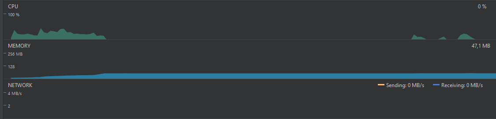
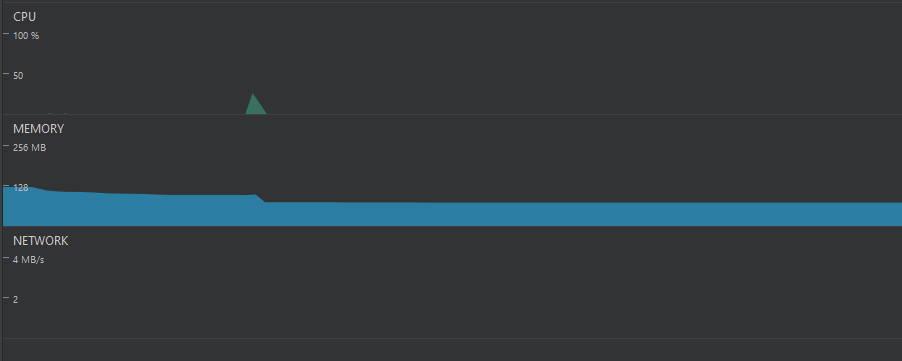

Análisis de rendimiento
Aquí se realiza el análisis de rendimiento, basado en un profiling a la aplicación
Página principal
Se observa un aumento rápido en el uso de la memoria, estabilizándose en 57 MB. El uso de CPU se mantuvo por debajo del 50%. Nada fuera de lo comúm.
Catálogo de mangas
Al entrar al catálogo de mangas y scrollear hacia abajo, se observa un aumento rápido en el uso de la memoria debido a las imágenes que se deben desplegar. También hay un uso relativamente constante en la CPU y red debido a realizar el scroll y la descarga de las imágenes respectivamente. En este punto, el uso de memoria está en torno a los 100 MB.


Detalle de un manga
Entrar al detalle de un capítulo solo requiere de uso de CPU, por lo que se puede inferir que la información del capítulo se descarga junto con las imágenes.
Lista de capítulos
Se abrió la lista de capítulos para un manga y se realizaron operaciones, tales como cambiar el orden en los que se despliegan los capítulos y cambiar el modo de despliegue de los capítulos. Al hacer esto, no solo hay un uso de CPU, sino que también varía el uso de memoria: se observa que se lanzan varios eventos de GC. Sin embargo, se puede ver que la memoria liberada vuelve a usarse rápidamente. Esto claramente es contraproducente para el performance. En esta pantalla se presentó GUI Lagging, seguramente por los eventos de GC.
Capítulo específico
Se procedió a abrir un capítulo específico. Se presenta un rápido aumento en el uso de la memoria, llegando a casi 130 MB. En este caso, no solo se descarga y se guarda en memoria la imagen de la página actual, sino que también se hace para las siguientes páginas para que ya estén listas cuando se cambie de página. Sin embargo, la primera página suele demorarse bastante tiempo en desplegarse. Esto puede deberse a que las imágenes no se descargan secuencialmente, sino que se hace simultáneamente.

Camio de página
Se observa que cada vez que se cambia de página, aumenta ligeramente el uso de memoria y se presenta uso de red y CPU por un breve periodo de tiempo, debido a la descarga de una imagen y a la animación de cambio de página. Dado que anteriormente se observó que se descargan varias imágenes al abrir un capítulo, se puede inferir que al cambiar de página se descarga la imagen correspondiente a la siguiente página no descargada. Esto implica que se tiene una ventana de imágenes a descargar dada la página actual con el fin de evitar en la medida de lo posible que una página aún se esté descargando al llegar a dicha página en el lector.

Cambio Rápido de página
En este caso, se cambió de página rápidamente y repetidas veces. Como se esperaba dado lo obtenido anteriormente, se presenta un uso de red y de CPU prolongado, proporcional al número de páginas a descargar. Uno de los problemas detectados al realizar esto, es que se descargan imágenes que luego no son desplegadas, por ejemplo, pasando rápidamente de la página 1 a la 30, páginas como de la 10 a la 20 no deberían descargarse, pues es una página muy alejada a la página 30, y no ha sido previamente descargada al estar lejos de la página 1. Adicionalmente, se observa que se dispara un evento de GC debido a que varias imágenes ya no necesitan estar en memoria. Este evento no afecta la GUI, ya que no se presenta GUI Lagging.

Cambio de página (sentido contrario)
En esta ocasión, se cambió de páginas rápidamente, pero hacia el sentido contrario. No hay uso de red, pues las imágenes ya están descargadas. Al realizar esto, se lanzan varios eventos de GC, cosa que no pasó al cambiar las páginas en el otro sentido. Esto se debe a que, en el caso anterior, las imágenes aún no estaban descargadas, por lo que no ocupan espacio en memoria, y al descargarse, no necesitan guardarse en memoria, pues no se están desplegando. En el caso actual, las imágenes ya están descargadas, por lo que al cambiar de página, es necesario cargarlas a memoria para desplegarlas. Esto provoca aumento en el uso de memoria por la carga de estas imágenes, y el lanzamiento de eventos de GC para quitar las imágenes que ya no se está usando. Se supera el umbral de 128 MB de uso de memoria en múltiples ocasiones.

Nuevo capítulo
Al cambiar de capítulo, ocurre lo mismo que cuando se abre un nuevo capítulo, pues se descargan las primeras imágenes al mismo tiempo.
Cambio de color de páginas
En este caso, el uso de CPU se mantiene mientras se varía el color de las páginas. Mientras tanto, el uso de memoria es bastante irregular.

Lista de capítulos (scroll)
Al realizar scroll en la lista de capítulos de un manga, se presenta un aumento constante en el uso de memoria, finalizando con un evento de GC y un pico en el uso de CPU de más del 60%.
Descarga de capítulos
Al descargar varios capítulos, el uso de red es constante la mayoría del tiempo, tal como se esperaba. En este caso, el uso de CPU se mantiene bastante bajo, mientras que el uso de memoria es constante.

Botón de home
Cuando se presiona el botón de Home, la memoria disminuye considerablemente debido a un evento de GC.
Volver a la app
Antes de volver a la app, se reanuda la descarga de capítulos, por lo que se presenta uso de red y CPU. Al cambiar la app a primer plano, aumenta ligeramente el uso de memoria. Además de esto, se observa que el uso de memoria luego de volver a la app es ligeramente menor al uso antes de volver al home.
Visualizador de capítulos (Entrar y salir rápidamente)
Al realizar esta acción, el uso de memoria aumenta cada vez que se empieza a visualizar un capítulo, y se lanza un evento de GC al salir del visualizador. Pese a que se lancen varios eventos de GC, estos solo se lanzan al volver al listado de capítulos, por lo que no se presenta GUI Lagging.


Extensiones
En la actividad de la lista de extensiones disponibles, al realizar scroll en esta vista, se presenta un uso de CPU bastante elevado, alcanzando casi un 60% de uso. Adicionalmente, el uso de memoria aumenta ligeramente.
Instalación de extensiones
Al instalar una extensión, se lanza una actividad que no es de la aplicación, por lo que ésta pasa a estar en segundo plano, disminuyendo su uso de memoria.
Zoom in/out
Se realizó Zoom in/out rápidamente en una página mientras es visualizada en el lector. El uso de CPU es bastante reducido, por lo que el manejo de estas operaciones es eficiente.

Rotación de pantalla
Al rotar la pantalla múltiples veces, el uso de memoria disminuye momentáneamente para luego volver a aumentar cada vez que hay una rotación. El estado de la aplicación se mantiene gracias al uso de Nucleus.

Open in browser
Esta acción lanza una Actividad de otra aplicación, por lo que el uso de memoria de la aplicación disminuye considerablemente al pasar a segundo plano.
Open web view
Aunque esta funcionalidad es muy similar a la anterior, tienen una diferencia fundamental: esta vez no se lanza una Actividad de otra aplicación, por lo que la aplicación sigue en segundo plano. El uso de CPU es bastante elevado, llegando a más del 65%, debido al renderizado de los componentes web de la vista. el uso de memoria aumenta hasta cerca de 100 MB. Es difícil saber cuál de las dos funcionalidades es la más adecuada, pues no se puede monitorear el uso de recursos de otras aplicaciones tan fácilmente.

Uso de multithreading
Como fue mostrado en la sección de Arquitectura y en la sección de Features, el uso de varios hilos de ejecución se sustenta en la realización de varias tareas en segundo plano, como la descarga simultánea de varios capítulos de manga. De igual manera, también se ve representado en la descarga en segundo plano de los capítulos subsecuentes de un manga, mientras que el usuario va consumiendo simultáneamente (a un ritmo más lento por supuesto) cada capítulo que ya fue completamente descargado. Sin embargo ¿Cómo se ve en líneas específicas y ejemplarizantes dicho comportamiento? El uso de multithreading dentro de Tachiyomi se basa en el uso de la líbrerías Nucleus y ReactiveX y con el fin de clarificar por completo este funcionamiento, vamos a explicarlo mediante uno de los ejemplos mencionados anteriormente: la descarga de capítulos de un manga específico. De esa manera, estando Tachiyomi basada en el patrón arquitectural MVP, se comienza por una interacción Usuario-Vista, aunque en esta situación se trata de una interacción Usuario-Controlador, siendo el controlador un Wrapper de la vista. Así, se tiene la petición por parte de un usuario de descargar un manga y dicha petición converge al siguiente fragmento de código:
Como se puede ver en el fragmento, dicha invocación del método de descargas hace a su vez una invocación al presentador de dicho componente de descargas en la línea 4 del gist (cumpliendo con las especificidad del patrón arquitectónico):
Finalmente, dicho proceso se lleva a una de las clases Singleton que sirve con el fin de tratar las descargas (tareas de alto rendimiento) de una manera conjunta y organizada, dando la posibilidad de incluso encolar peticiones de descargas y manejarlas de manera simplificada. Siendo así, se hace uso del DownloadManager:
Como se ve, el DownloadManager se apoya en la clase Downloader, que se encarga exclusivamente de descargar capítulos de mangas, al encolar toda petición en él. De aquí en adelante, el juego de los múltiples hilos de ejecución toma cada vez más peso.
Ahora bien, la asincronía manejada por la librería de ReactiveX se reduce a generar procesos Observables, escuchar dichos procesos y responderle a quienes escuchaban a un evento específico de dichos procesos de la consecución de dicho evento. De esa manera, si no solo se generan varios procesos sino que los escuchas de los eventos de ese proceso son múltiples, la asincronía y el manejo de hilos varios de ejecución empieza a dar réditos. En el caso particular de las descargas encoladas, dichos procesos son la ejecución de las descargas encoladas (es decir, la adquisición de los archivos) y los eventos a manejar son su pausa, su correcta ejecución, su cancelación o la aparición de un error inesperado. De esta manera, siendo la única forma de pausar o terminar el proceso la petición de un usuario de hacerlo explicitamente, tendremos los siguientes manejos:
De igual manera, las suscripciones se realizan como se muestra a continuación, resaltando que durante dichas suscripciones, en el Downloader, se observa la ejecución de Schedulers, que no son más que unidades que asignan hilos de ejecución a tareas específicas (Aquí es donde se ve explicitamente el uso de múltiples hilos de ejecución)
Finalmente, aqui cabe resaltar que la ventaja consiste en la realización de múltiples procesos observables, pues es justo en el momento de la ejecución de un evento significativo para el suscriptor que éste se hará cargo de los resultados obtenidos. Mientras tanto, dicho suscriptor puede realizar otras tareas y ahí está el poder asíncrono de ReactiveX. Ahora bien, junto con Nucleus, la ventaja consiste en realizar tareas asíncronas con varios hilos de ejecución de tal manera que el funcionamiento del patrón MVP no se vea afectado y la interfaz gráfica se adecue al funcionamiento asíncrono. Por eso, los obsrvadores están presentes en el Presentador para manejar correctamente la vista como se muestra a continuación:
Memory Leaks
Luego de realizar el profiling de la aplicación, se siguió el mismo flujo de navegación, realizando las mismas acciones, pero esta vez corriendo la aplicación en debug mode y usando LeakCanary para encontrar posibles Memory Leaks. La herramienta no detectó objetos que fueran retenidos en memoria en ningún momento durante la ejecución de la aplicación, por lo que se puede decir que no se detectó ningún Memory Leak.